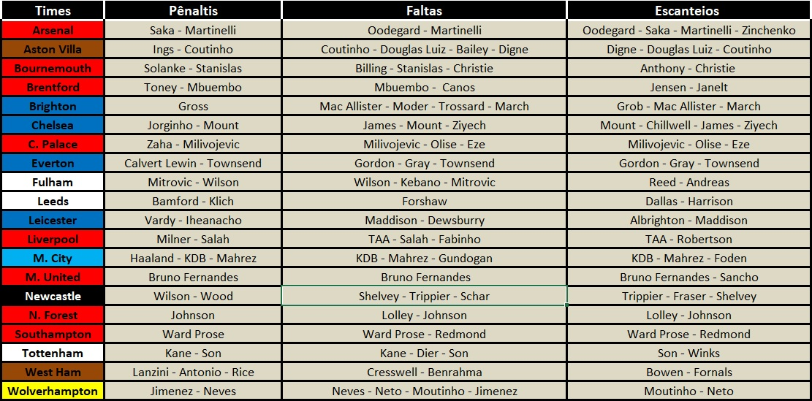

Principal
Prováveis Escalações
Notícias
Próximos Jogos
Batedores Pênaltis/Faltas/Escanteios
Batedores das Equipes da Premier League
por FabioVascão
Atualizado em 21/Dezembro/2022
Batedores de cada Equipe
